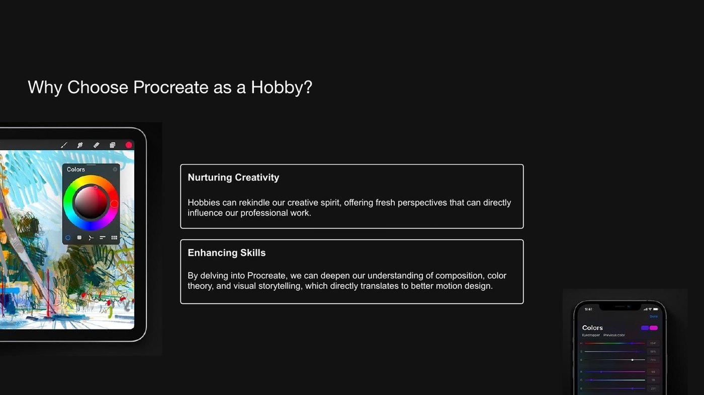
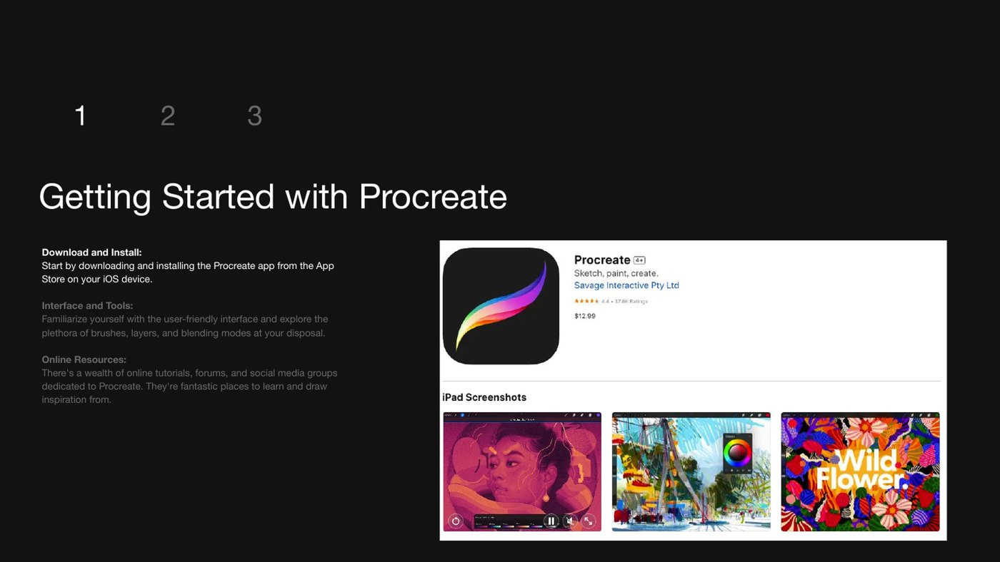
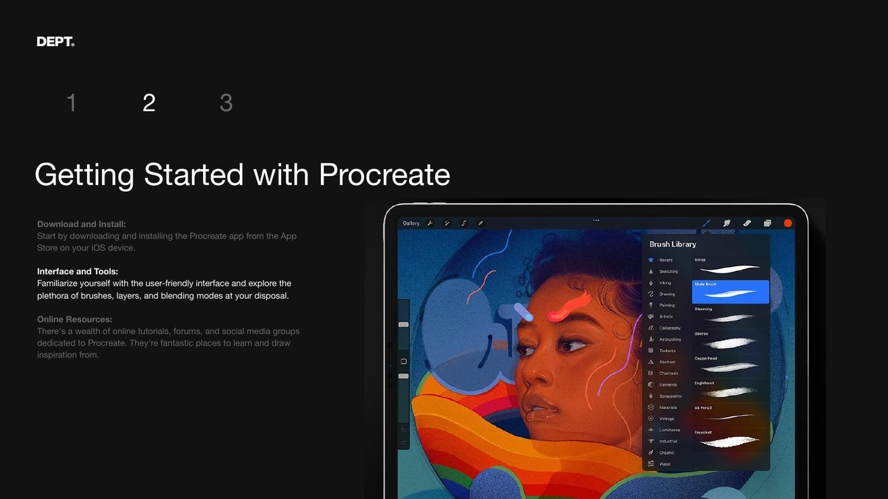
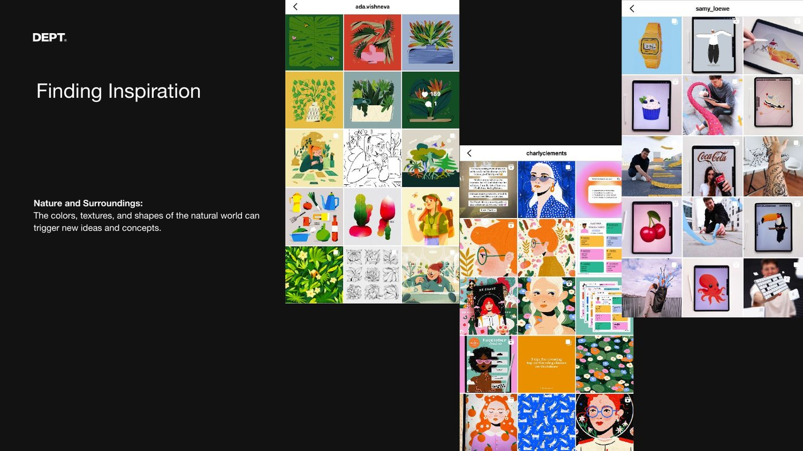
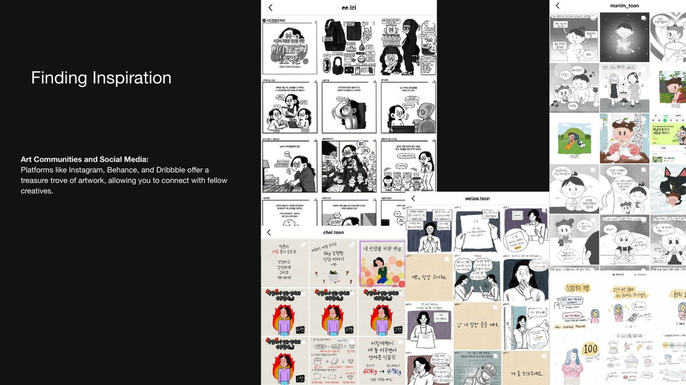
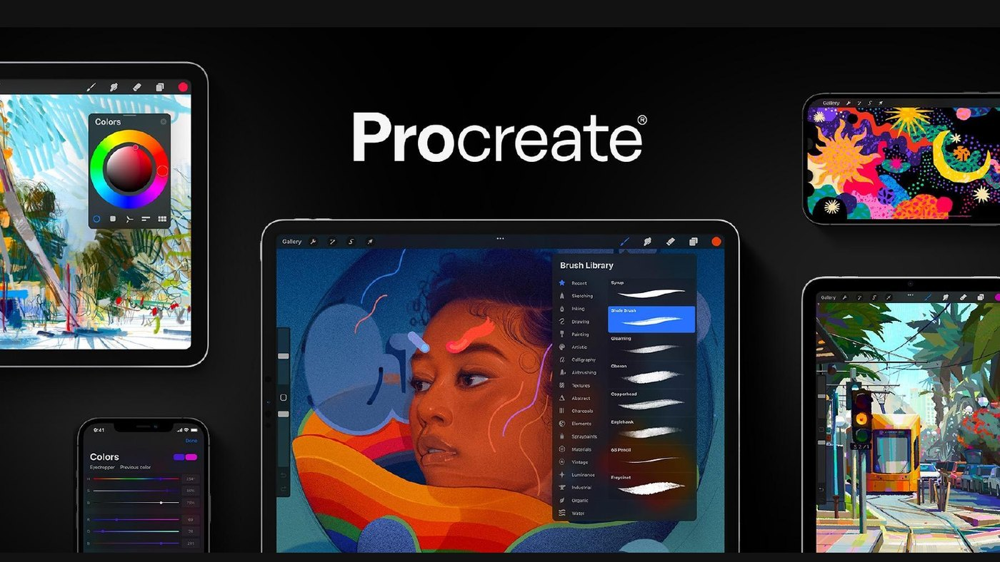

When AI image generation first showed up, the mood was basically: well, illustrators are done. Why would anyone sit and draw when a prompt hands you a finished picture in seconds?
A couple of years in, I think the opposite happened. Now that the feed is wall-to-wall AI images — technically perfect, faintly interchangeable — the thing that actually stands out is the opposite of perfect: a real hand, a specific taste, a style that's obviously someone's. The more AI there is, the more your own touch becomes the point.
And it isn't really a fight. Some of my favorite results come from feeding a rough drawing of my own into AI and letting it push further — and the other way around, taking an AI starting point and finishing it by hand. The human part and the machine part make each other better. You just have to have a human part to bring.
Which is a long way of saying a hand-drawing habit feels more useful now, not less. So here's the small, genuinely powerful tool I keep coming back to. (This started as a talk I gave my team — I've kept the slides.)
What it actually is
Procreate is a painting app for the iPad. That's the whole pitch. It blew up with illustrators because the interface gets out of the way — you can make something that looks finished almost immediately. For a busy person, that low friction is the entire appeal.
IG post cred below: left @thisprocreate right @Anithalogy
Why bother, with everything else there is to learn
If you do motion, there's always a more urgent thing to learn next — expressions, 3D, the next plugin. So why spend time on a drawing hobby? Because most of us spend all day inside one client and one set of brand guidelines. A hobby like this is where your own taste gets to breathe again, and that comes back into the paid work. It recharges a battery the day job slowly drains.
I always wanted to draw and always assumed I couldn't — too much detail, not good enough. Then my feed filled up with those oddly satisfying Procreate breakdown videos, people in the comments asking "what app is that?" That was Procreate. I started on a tiny iPad mini with a knockoff pencil, decided it was working, and upgraded. I'd had the Photoshop and Illustrator iPad apps for years and never touched them — too many features, I'd get lost. Procreate just wanted me to draw.

Getting started is almost nothing
Thirteen dollars, once. No subscription — rare these days. You need the app and a pencil, and that's the whole setup. Honestly you only need two things to make something that looks professional: a few hand gestures and the layers panel. Pull up a beginner tutorial, draw a watermelon, and you're basically going.


Where the ideas come from
Nature does a lot of the work — colors, textures, and shapes you'd never invent on your own. And because everything exports to PSD, a sketch doesn't have to stay a sketch; it can end up in a video or a layout later.

The part I actually love: the communities
Instagram has the biggest one, and it's full of doodle-style artists using Procreate as a diary — motherhood, daily life, little stories. My favorites are the lawyer toons: they team up with illustrators to turn real cases into these dramatic, weirdly informative comics. I tried journaling my own life in that format for a while — one of those in the corner is mine — and then my son hit three months old and the account went quiet. I keep meaning to start again.

Showing the work — and the sneaky best feature
If you want to share it: a portfolio, or the art challenges (all the -tober hashtags — inktober, drawtober; I still don't know what the suffix means). But the quietly brilliant feature is this — Procreate records a time-lapse of your whole drawing as you go. When you're done, you just export it. It's a finished breakdown video with zero editing. I put three of mine on my portfolio when I was job hunting, and they did more for me than half my actual work samples.
It's just a hobby — that's the point
That's really the whole thing. No pressure, no deliverable, no client. Exploration, growth, and the small satisfaction of finishing something that's only yours. And if you want to go further, they've got an animation app now, Procreate Dreams.

I don't draw because I think I can out-draw a model that's seen every image on the internet. I can't, and that was never the point. I draw because it keeps the part of me that has opinions — about color, about what's funny, about what a thing should feel like — awake. In a feed full of pictures no hand ever touched, that part is turning out to be the whole value. So I'd rather keep it in practice.